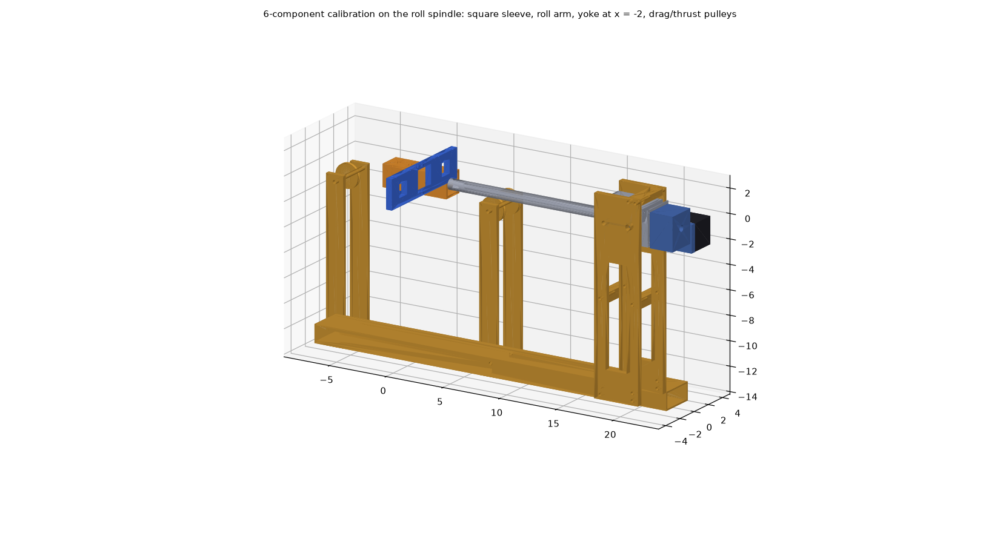
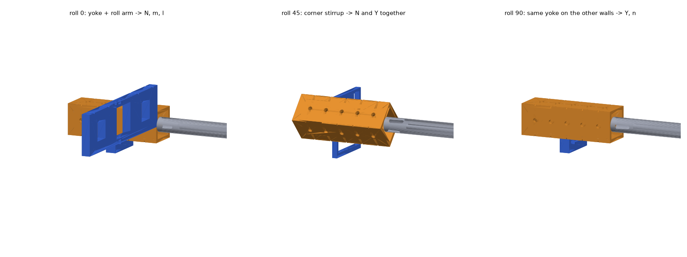
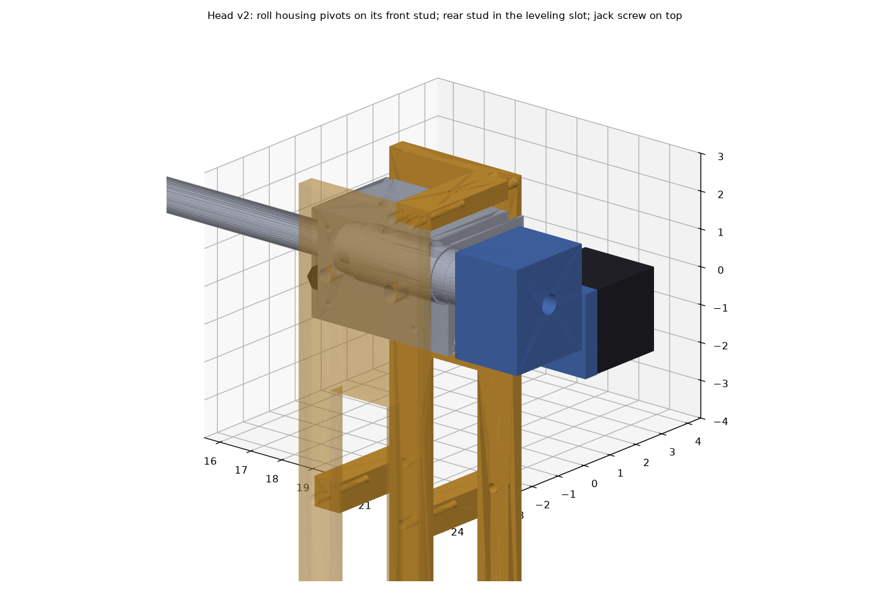
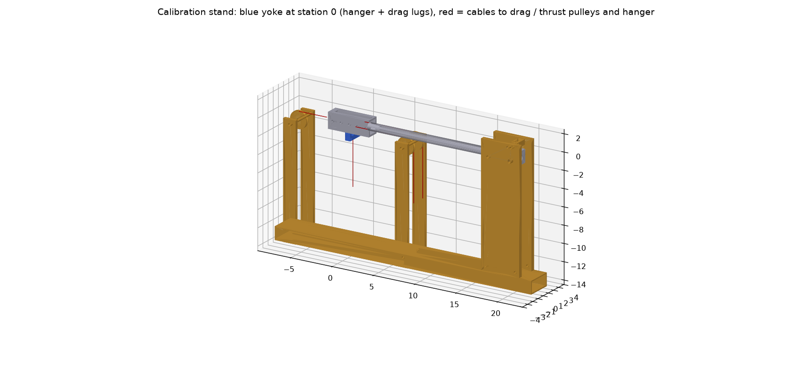

Calibration
The balance is calibrated on its own roll spindle with known dead weights. Each bridge combination gets a statistically selected regression, and the fit ends with a pass/fail report.

Principle: roll the balance, not the weights
Weights always hang straight down. Because the spindle can roll the balance to any angle, the same yoke and weights load different components:
| Roll | Hanger | Loads produced |
|---|---|---|
| 0 / 180° | yoke on the top/bottom sleeve walls | normal force N and pitching moment m (both signs); rolling moment l from the roll arm |
| 90 / 270° | the same yoke on the side walls | side force Y and yawing moment n (both signs) |
| 45 / 135 / 315° | corner stirrup in V-notches | N and Y together (interaction terms) |
| 0 / 90 / 180 / 270° | drag cable from the station pin, thrust from the front eyebolt | axial force A alone and combined with the other loads |

Hardware
- Square sleeve (1.85 in, 6061) bolts and dowels to the balance front face in place of the model puck. It has 1/4 in load holes in all four walls at x = −2, −1, 0, +1, +2 in on the balance axis, and V-notches across the corners at the same stations.
- Roll arm slides over the sleeve at x = 0, held by dowels and set screws. Knife-edge notches at y = ±2 and ±4 in give up to 30 in-lbf of rolling moment.
- Universal yoke on stub pins (its weight acts at the pin) and a 45° stirrup for the corner cases (a 90° V-seat with a knife-edge rib that drops into the corner groove at the station). Both hang in the lab frame.
- Head plates v2: the roll housing pivots on its front cam-follower stud. The rear stud sits in a ±1.6° leveling slot, and a jack screw re-levels after every load. Drag and thrust pulleys are reused from the 3-component stand.
- Collision check: clear at roll 0/45/90/135/180/270/315 with the hanger at x = −2, 0 and +2.




Parts, drawings and CAD files
| Drawing (PDF) | Part | STEP |
|---|---|---|
| WT-6C-300 | Assembly, calibration (parts list) | assembly_calibration_6c_roll0.step |
| WT-6C-301 | Sleeve, calibration | sleeve_6c_6061.step |
| WT-6C-302 | Arm, roll calibration | roll_arm_6061.step |
| WT-6C-303 | Stirrup, 45° | stirrup_45_6061.step |
| WT-6C-304 | Yoke, calibration | yoke_6c_6061.step |
| WT-6C-305 | Plate, head (qty 2) | head_plate_v2_6061.step |
| WT-6C-306-1 | Bridge, jack | jack_bridge_v2_6061.step |
| WT-6C-306-2 | Spacer, cross (qty 2) | cross_spacer_6061.step |
| WT-6C-307 | Tube, base | base_tube_v2.step |
| WT-6C-308 | Upright, pulley (qty 4) | drag_upright.step |
| WT-6C-309 | Axle, pulley (qty 2) | thrust_axle.step |
| WT-6C-310 | Pulley, cable, 2 in (qty 3, R5-2Z bearing) | pulley_2in.step |
Method (after Ulbrich & Bader, NASA)
- Six responses, each aligned with one load: PD = M2 − M1 → N, PS = M2 + M1 → m, YD = Y2 − Y1 → Y, YS = Y2 + Y1 → n, L → l, X → A.
- Each response starts from its main term. An extra term from the 27-term set (6 linear, 6 squares, 15 products) is added only if |t| is significant (p < 0.001), every VIF < 5 and PRESS improves. A full quadratic overfits.
- Applied loads are computed from the roll angle, the measured stand tilt, and the weights and CGs of the sleeve, yoke, stirrup and arm (from the CAD).
- Zeros are taken with the balance alone at every roll angle and subtracted. This removes the balance's own weight, which changes with roll.
- Schedule: 233 rows = 188 fit + 24 held-out check points + 21 zeros. Every point stays within full scale and the neck limits (|m| + 1.35|N| ≤ 48.75 in-lbf, |n| + 1.35|Y| ≤ 20.8 in-lbf).
- Pass criteria: residual SD ≤ 0.25 % FS, no outliers, check-point errors ≤ 0.5 % FS (2σ), sensitivities within 15 % of theory.
Software check (synthetic 6-component balance)
The script was run end-to-end on synthetic data with deliberate errors built in: gauge sensitivities 2-5 % off, cross-talk into the axial, roll and yaw bridges, a self-weight zero that changes with roll, and 0.4 µV/V noise.
| Built in | Recovered |
|---|---|
| Pitch necks +3 % / −2 %, yaw necks −3 % / +2 % | PD, PS, YD, YS within 0.1 % of the true values |
| Roll bridge +4 %, axial +5 % | 0.04260 vs 0.04259; 0.35542 vs 0.35538 mV/V |
| Cross-talk: Y and N into L; N, m, Y, NA into X; m into the yaw bridges; n into the pitch bridges | all selected and recovered (e.g. X: 0.0040 N, −0.0030 m, 0.0019 Y, 0.00059 NA) |
| Neck spacing 2.70 in | 2.701 (pitch), 2.700 (yaw) from the fitted coefficients |
| Check-point load error (2σ, % FS) | N 0.07, A 0.06, m 0.23, Y 0.10, n 0.12, l 0.08 - PASS |
Limitation: Y and l are never applied together, so the Y·l interaction cannot be estimated. If the real data show it matters, add roll-arm points at roll 45°.
Files: balance_calibration_fit_6c.py (schedule / fit / apply / demo), calibration_schedule_6c.csv, calibration_6c_mass_properties.json; the 3-component version balance_calibration_fit.py; CAD in files; drawings WT-6C-301 to 307 on the Drawings page.